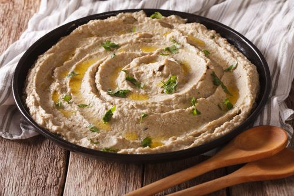

Culinária árabe é um termo que define as diversas culinárias regionais existentes por todo o Mundo Árabe, do Iraque a Marrocos passando pelo Egito, Levante, entre outros. Também foi influenciada pelas culinárias vizinhas, como da Turquia, Paquistão, Irã e Índia, além dos hábitos alimentares dos berberes e de outros povos e culturas que habitavam estas regiões antes do processo de arabização cultural empreendido pelos árabes durante a chamada expansão islâmica.
Baba ganoush
Babaganoush, a deliciosa pasta de berinjela, é uma receita árabe maravilhosa feita à base de tahine (pasta de gergelim), parecida com o homus (pasta de grão-de-bico). No TudoGostoso, você encontra outras receitas da culinária árabe, como esfirra, lentilha à moda árabe, falafel e quibe